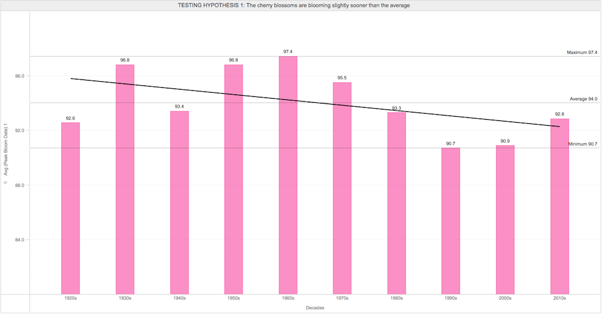
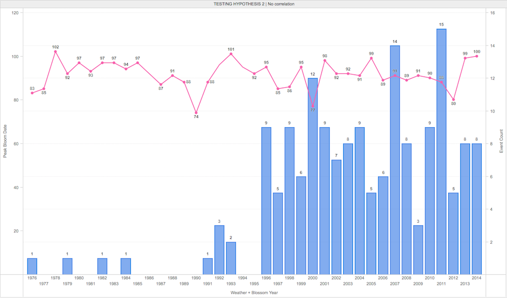

Everyday Analytics
The few short days that the Cherry Blossoms will finally bloom is the perennial DC enigma--that, and government conspiracies, I suppose. This year I chose to take a methodical approach to predicting the exact day so that I could plan my vacations accordingly.
Dramatic Decade-Specific Changes
When you look at the decade-level averages, the change appears even more pronounced--perhaps the media got it right. Perhaps it is time to investigate whether this is due to the increased maturity of trees, lack of data for the 2010s, environmental factors, or something else?

Hypothesis 1: Incomplete Data
I obtained the cherry blossom data for 2013-2015 which normalized the data somewhat. It appears that the cherry blossoms are blooming a day or two earlier than the average. Was the lack of data the only factor?

Hypothesis 2: Environmental Factors
When plotting the number of severe weather incidents from the first of January to the day of peak bloom, there appears to be no correlation.


THE MILLION DOLLAR QUESTION | So, when will the cherry blossoms bloom in 2016?

My Data-Driven Prediction: April 4, 2016